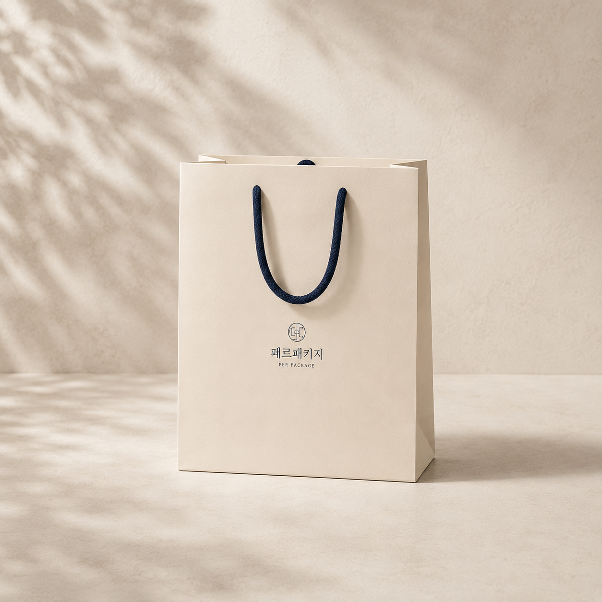

처음 제작 가이드
제품 실측, 수량, 일정, 샘플 확인처럼 처음 문의할 때 필요한 기본 정보를 정리합니다.
콘텐츠 카테고리
제품 종류보다 먼저 고객의 고민을 기준으로 묶었습니다. 필요한 글을 빠르게 찾고, 상담 전 확인할 항목까지 이어지도록 구성했습니다.
제품 실측, 수량, 일정, 샘플 확인처럼 처음 문의할 때 필요한 기본 정보를 정리합니다.
단상자, 싸바리박스, 합지박스, 골판지박스가 어떤 상황에 맞는지 비교합니다.
박, 형압, 코팅, 컬러, 종이 질감이 실제 패키지 인상에 어떤 영향을 주는지 설명합니다.
식품, 화장품, 카페, 전자제품, 행사 굿즈처럼 사용 상황별 체크 포인트를 모읍니다.
최근 제작 가이드
기존 초안에서 바로 퍼블로그/홈페이지 SEO 콘텐츠로 확장하기 좋은 글감입니다.


보드 두께, 겉지, 자석, 리본, 내부 트레이까지 프리미엄 박스에서 먼저 결정해야 할 항목을 정리합니다.

종이 두께, 손잡이 방식, 바닥 보강, 제품 무게를 함께 확인해야 실제 사용 중 파손을 줄일 수 있습니다.
로고와 문양을 돋보이게 하는 박 작업의 장점과, 디자인 파일에서 미리 확인해야 할 부분을 정리합니다.
인쇄, 코팅, 후가공, 샘플 확인 시간을 무리하게 줄이면 선택 가능한 사양과 검수 과정이 달라집니다.
넓은 면적, 낮은 높이, 유분과 수분, 이동 중 흔들림까지 고려해야 하는 식품 포장 구조를 설명합니다.
작은 박스일수록 로고, 정보 배치, 색상, 후가공의 밀도를 조절해야 브랜드 인상이 정돈됩니다.
운영 방식
같은 소재를 그대로 복사하지 않고, 블로그는 검색 유입과 쉬운 설명을 담당하고 홈페이지 글은 내부 링크와 상담 전환을 담당하도록 분리합니다.
제작 상담
정확한 견적은 사양 확인 후 안내드리지만, 어떤 박스 구조로 시작하면 좋을지는 상담으로 함께 좁혀볼 수 있습니다.